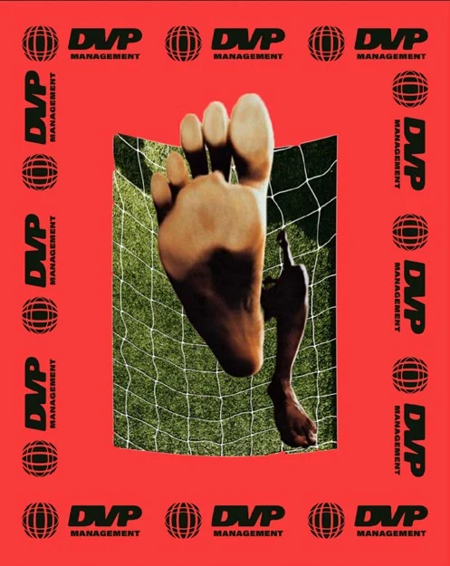

Football Management
PRIMERO,EL FÚTBOL.
Representación deportiva: contratos, renovaciones y transferencias. Diseñamos contigo el plan de tu carrera y te acompañamos en la relación con tu club.
Football Management
PRIMERO,EL FÚTBOL.
Representación deportiva: contratos, renovaciones y transferencias. Diseñamos contigo el plan de tu carrera y te acompañamos en la relación con tu club.


TU PRESENTE.TU FUTURO.
Planeación de ahorro e inversión, análisis de proyectos y organización patrimonial. Decide con información y prepara tu vida después del fútbol.
TU PRESENTE.TU FUTURO.
Planeación de ahorro e inversión, análisis de proyectos y organización patrimonial. Decide con información y prepara tu vida después del fútbol.



TU IMAGEN.MÁS ALCANCE.
Marca personal, redes sociales, patrocinios y campañas. Gestionamos tu imagen y las oportunidades comerciales que nacen de ella.
TU IMAGEN.MÁS ALCANCE.
Marca personal, redes sociales, patrocinios y campañas. Gestionamos tu imagen y las oportunidades comerciales que nacen de ella.
ENTIENDE.MEJORA.
Videoanálisis de tus partidos, lectura táctica y seguimiento de rendimiento. Revisamos tus decisiones y trabajamos contigo un plan de mejora.
ENTIENDE.MEJORA.
Videoanálisis de tus partidos, lectura táctica y seguimiento de rendimiento. Revisamos tus decisiones y trabajamos contigo un plan de mejora.


CUERPO.CABEZA.FÚTBOL.
Psicología deportiva, nutrición personalizada y preparación física y técnica. Especialistas coordinados alrededor de tu rendimiento y tu bienestar.
CUERPO. CABEZA.FÚTBOL.
Psicología deportiva, nutrición personalizada y preparación física y técnica. Especialistas coordinados alrededor de tu rendimiento y tu bienestar.
EL JUEGONO TIENEFRONTERAS.
Representación con visión internacional y conocimiento del fútbol de México, Estados Unidos, Sudamérica y Europa.
EL JUEGO,SIN FRONTERAS.
Representación con visión internacional y conocimiento del fútbol de México, Estados Unidos, Sudamérica y Europa.